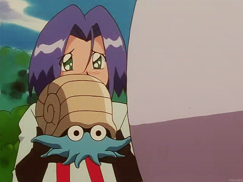
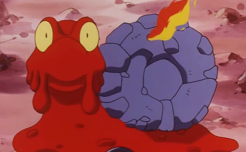
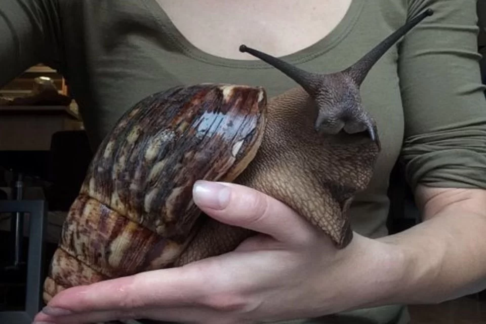
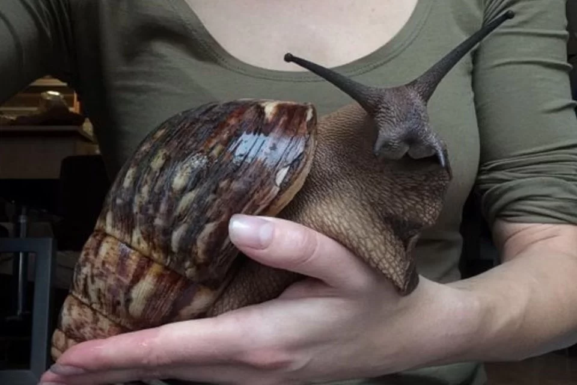

Foi introduzido ilegalmente em nosso país na década de 1980, no Paraná, com o intuito de substituir o
escargot, pois seu porte é maior que esses animais. Transferido para outras regiões do Brasil, tal espécie
acabou não sendo bem recebida entre os consumidores, também sendo proibida pelo IBAMA, fazendo com que muitos
donos de criadouros, displicentemente, liberassem seus representantes na natureza, sem tomar as medidas
necessárias.
Sem predadores naturais, tal fator, aliado à resistência e excelente capacidade de procriação desse animal, permitiram com que esse caramujo se adaptasse bem a diversos ambientes, sendo hoje encontrado em 23 estados. Só para se ter uma ideia, em um único ano, o mesmo indivíduo é capaz de dar origem a aproximadamente 300 crias.
Além de destruírem plantas nativas e cultivadas, alimentando-se vorazmente de qualquer tipo de vegetação, e competir com espécies nativas – inclusive alimentando-se de outros caramujos; tais animais são hospedeiros de duas espécies de vermes capazes de provocar doenças sérias. Felizmente, não foram registrados casos em que essa doença, em nosso país, tenha sido transmitida pelo caramujo-gigante. São elas:
Como personagens animados, podemos citar os Pokémon Omanyte (em primeiro) e Magcargo (em segundo):
Sem predadores naturais, tal fator, aliado à resistência e excelente capacidade de procriação desse animal, permitiram com que esse caramujo se adaptasse bem a diversos ambientes, sendo hoje encontrado em 23 estados. Só para se ter uma ideia, em um único ano, o mesmo indivíduo é capaz de dar origem a aproximadamente 300 crias.
Além de destruírem plantas nativas e cultivadas, alimentando-se vorazmente de qualquer tipo de vegetação, e competir com espécies nativas – inclusive alimentando-se de outros caramujos; tais animais são hospedeiros de duas espécies de vermes capazes de provocar doenças sérias. Felizmente, não foram registrados casos em que essa doença, em nosso país, tenha sido transmitida pelo caramujo-gigante. São elas:
- Angiostrongylus costaricensis: responsável pela angiostrongilose abdominal, doença que provoca perfuração intestinal, de sintomas semelhantes aos da apendicite;
- Angiostrongylus cantonensis: responsável pela angiostrongilíase meningoencefálica, de sintomas variáveis, mas muitas vezes fatal.
Como personagens animados, podemos citar os Pokémon Omanyte (em primeiro) e Magcargo (em segundo):


 
Próximo animal:

Próximo animal: